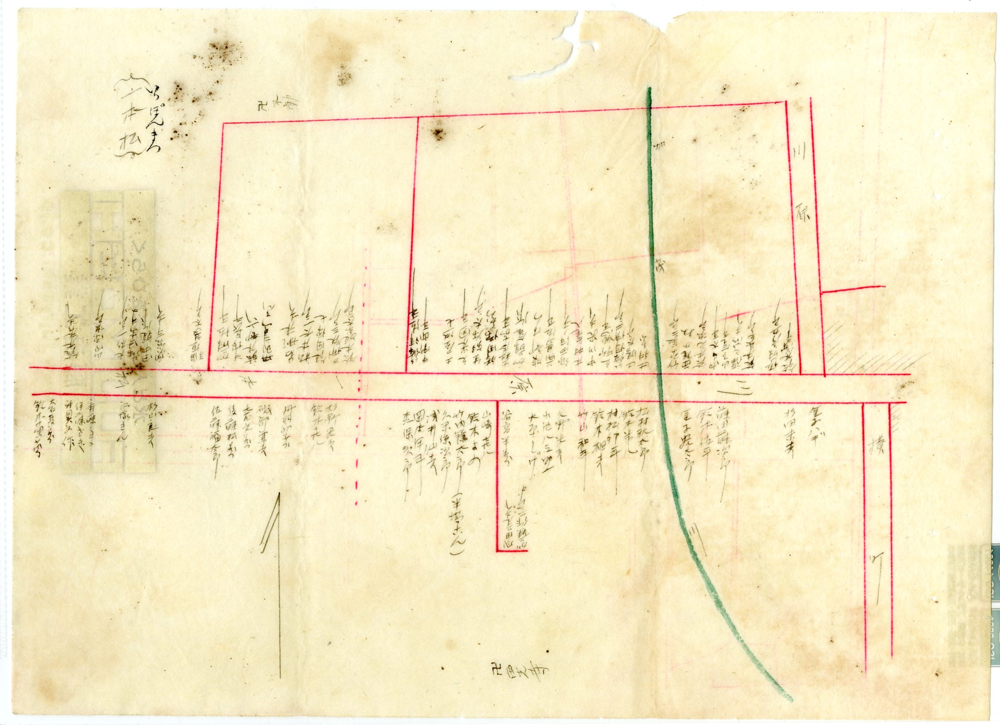

HOUSE BY HOUSE「戸別」── 一軒ずつ記された家並み
地図を開くと、まず目に飛び込んでくるのは、道に沿ってびっしりと並ぶ手書きの名前です。赤い線で引かれた街道や小路の両側に、家が一軒ずつ、世帯ごとに記されています。間口の狭い家が肩を寄せ合うように連なり、その奥に敷地がのびていく。宿場町・見付の、人の密度の高い暮らしぶりが、そのまま紙の上に写し取られています。
一軒ずつの名前を眺めていると、ここが単なる土地の集まりではなく、家と家、人と人が重なり合って成り立っていた町だったことが伝わってきます。今に残る地割や町名の多くは、この時代の暮らしの単位を、かたちを変えながら受け継いだものです。
A MARK OF SUCCESSION名前は、受け継がれてきたしるし
戸別に記された名前は、その家がそこに「在った」という記録です。そして多くの家は、その後も世代を越えて住み継がれ、相続され、今へとつながっています。百年以上前の地図に記された区画が、現在のあなたの土地につながっている――見付では、それは決して珍しいことではありません。
だからこそ、相続した家や土地に向き合うとき、それを単なる「不動産」として数字だけで捉えてしまうと、どこか落ち着かない気持ちが残ります。そこには、長く続いてきた家の歴史があるからです。
そこにあるのは、土地建物ではなく、受け継がれてきた家の歴史である。
NOT JUST DISPOSAL相続した家は、「処分するもの」ではない
相続した家や空き家の話になると、つい「どう処分するか」という言葉で語られがちです。けれど、私たちはそれを少し違う角度から見ています。手放すかどうかを考える前に、まずその家がどんな経緯で受け継がれてきたのかを整理する。それは、過去を懐かしむためではなく、これからをきちんと決めるための準備です。
来歴を整理しておくと、選択肢が見えやすくなります。売る、貸す、活用する、今は動かさない――どれを選ぶにしても、家の背景を知っているかどうかで、判断の納得感がまるで変わってきます。

START BY ORGANIZINGまずは、家の来歴を整理することから
見付の古い家、相続した土地、空き家について、すぐに売る・売らないを決める必要はありません。まずは、その土地がどんな背景を持ち、どう受け継がれてきたのかを整理するところから始めれば十分です。名義はどうなっているか、いつ頃からの家か、どんな経緯で今に至るのか。一つずつほどいていくと、進むべき方向が自然と見えてきます。
急いで決めなくていい。まず、整理することから。
富士ヶ丘サービスでは、磐田市見付周辺の相続不動産・空き家・古い住宅のご相談を承っています。すぐに売るかどうか決まっていなくても構いません。まずは、家と土地の状況を一緒に整理するところからお手伝いします。